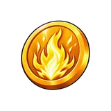
Ki Surge TokenFirst gacha: Energy
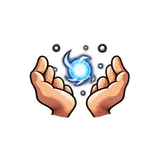
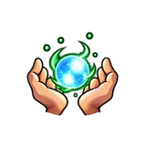
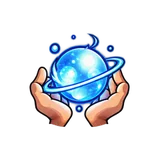
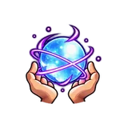
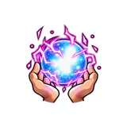
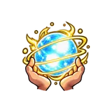
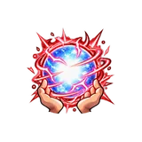
Tokens drop from enemies. You spend them on your world's two token gachas and its upgrade. These are how your energy and damage keep up with stronger worlds.
Every world has three Token types, named after what they pay for, such as Ki Surge Token or Gravity Training Token. Each type only works on its own gacha or upgrade, in its own world.
Every world has two gachas and one upgrade, each paid with its own Token. Under each gacha you can see all seven results, from Recruit to Godkiller.

Ki Surge TokenFirst gacha: Energy







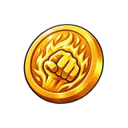
Saiyan Pride TokenSecond gacha: Energy
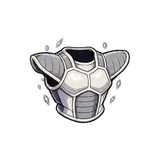
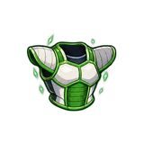
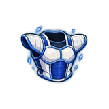
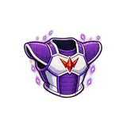
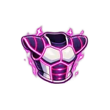
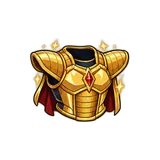
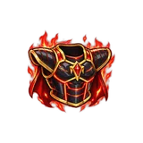
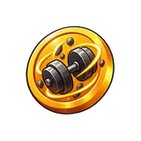
Gravity Training TokenUpgrade: Damage
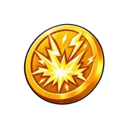
Super Form TokenFirst gacha: Energy
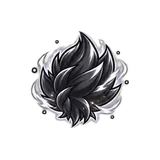
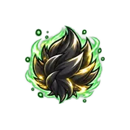
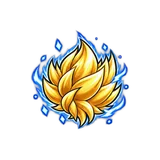
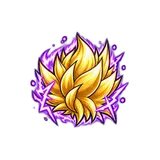
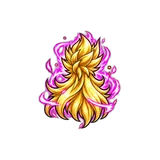
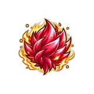
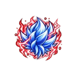
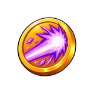
Galick Burst TokenSecond gacha: Energy
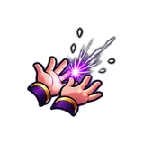
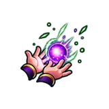
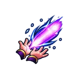
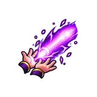
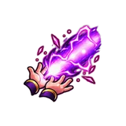
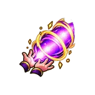
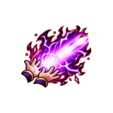
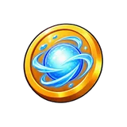
Ki Control TokenUpgrade: Damage
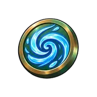
Chakra Flow TokenFirst gacha: Energy
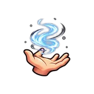
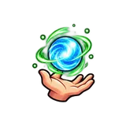
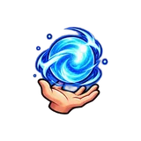
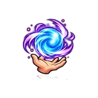
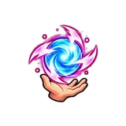
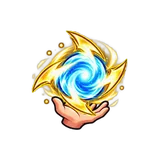
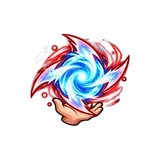
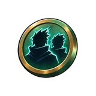
Shadow Clone TokenSecond gacha: Damage
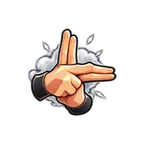
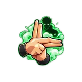
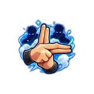
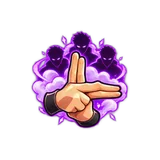
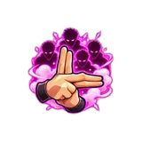
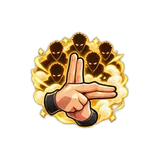
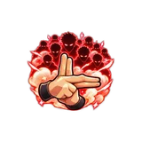
Ninja Way TokenUpgrade: Energy and Damage
Tailed Beast TokenFirst gacha: Energy
Sage Mode TokenSecond gacha: Damage
Curse Mark TokenUpgrade: Damage
Devil Fruit TokenFirst gacha: Energy
Armament Haki TokenSecond gacha: Energy
Rokushiki TokenUpgrade: Energy
Conqueror Haki TokenFirst gacha: Energy
Gear Shift TokenSecond gacha: Damage
Fruit Awakening TokenUpgrade: Energy
A roll costs 10 Tokens of that gacha and gives a result from Recruit to Godkiller, like Ki Surge — Champion.
| Tier | Chance per roll | Energy gacha | Damage gacha | Pity |
|---|---|---|---|---|
| Recruit | 40.55% | ×3 | ×3 | — |
| Fighter | 33% | ×4 | ×4 | — |
| Veteran | 19.9% | ×5 | ×5 | — |
| Champion | 5% | ×6 | ×6 | — |
| Overlord | 1% | ×9 | ×7 | 150 rolls |
| Sovereign | 0.5% | ×11 | ×8.5 | 400 rolls |
| Godkiller | 0.05% | ×13 | ×11 | 1,200 rolls |
Chances are the same in all token gachas. Luck has no effect on them. Each gacha has its own pity counters, and each tier counts on its own.
A kill has a 10% chance to drop 1 to 5 Tokens of that world. The enemy's tier decides the type:
Your drop bonus and the Scholar and Alchemist traits give you more Tokens. Tokens also come from the Horde, Defense and Endless raids and the VIP chest.
You can buy gacha Tokens for Robux at the gacha window. A pack works for that gacha only. Upgrade Tokens aren't sold for Robux. Where Roblox restricts paid random items, Token packs aren't sold either.
| Tokens | Price |
|---|---|
| 100 | 49 Robux |
| 500 | 199 Robux |
| 1,000 | 349 Robux |
| 5,000 | 1,499 Robux |
Extra Tokens can also be swapped with Exchange Coins. See Currencies.
Each world has one upgrade with its own levels. Upgrades from different worlds multiply each other.
| World | Upgrade | Levels | At max level |
|---|---|---|---|
| World 1 | Gravity Training | 60 | Damage ×1.6 |
| World 2 | Ki Control | 60 | Damage ×1.6 |
| World 3 | Ninja Way | 210 | Energy ×2.11, Damage ×2.01 |
| World 4 | Curse Mark | 410 | Damage ×5.1 |
| World 5 | Rokushiki | 80 | Energy ×1.8 |
| World 6 | Fruit Awakening | 210 | Energy ×3.1 |